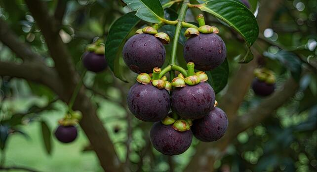

Mangosteen is a tropical fruit tree famous for its sweet white flesh and thick purple rind. Often called the “Queen of Fruits,” mangosteen is popular in Southeast Asia and grows best in warm, humid climates. The fruit is enjoyed fresh and is suitable for orchards, home gardens, and tropical farming projects.
Needs partial to full sunlight daily for healthy growth and fruit production.
Requires regular watering to keep soil moist, especially during dry weather.
Best growth at 25°C – 35°C in warm and humid tropical climates.
Use fertile, deep, well-draining soil rich in organic matter.
Trees usually produce fruits after several years. Harvest when fruits turn dark purple.
Consumed fresh, used in desserts, juices, smoothies, and tropical fruit dishes.
Cause: Nutrient deficiency or poor soil condition.
Solution: Add compost and balanced fertilizer regularly.
Cause: Excessive watering and poor drainage.
Solution: Improve soil drainage and reduce overwatering.
Cause: Lack of nutrients or unsuitable climate.
Solution: Provide proper fertilizer and warm environment.
Cause: Common tropical fruit pests.
Solution: Keep orchard clean and monitor fruits regularly.
Cause: Irregular watering or sudden heavy rain.
Solution: Maintain consistent watering schedule.